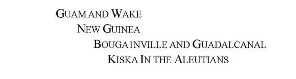
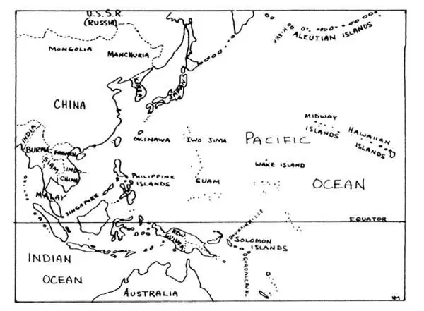
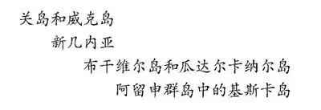
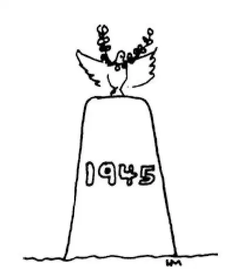

87
Fighting the Dictators
对抗独裁者

THE story of the biggest war that ever was cannot be told all in one chapter.
So this chapter is about World War II, too.
After France was taken, only the British Empire was left unconquered of all those countries that Germany had attacked. Even after the Battle of Britain, no one was sure that the Nazis would not try to invade England. But just keeping the Germans out of England would not win the war. No one believed that the English by themselves could beat the Germans. That is, no one believed it except the English. They refused to give up and they kept fight on trying to beat the most powerful, the best trained, and best equipped army in the world.
Other parts of the British Empire sent soldiers to help England. But these other countries (Canada, Australia, South Africa, New Zealand, and India) were far away across seas in which German submarines hunted for ships to torpedo.
Mussolini had brought Italy into the war on the side of Germany. Japan was burning, killing, and bombing in China, and Japan was friendly to Germany.
No country could be sure it would be safe from attack. Who would be next on the list?
Even the United States, three thousand miles across the ocean from Europe, felt its defenses should be strengthened. The very small American army was made into a very large army and American factories were put to work making tanks and airplanes and other war supplies. New ships began to be built for the navy. A large modern army, however, cannot be raised and trained and equipped in just a few days. It takes not a few days, nor months, but years. Warships take even longer than an army. Luckily for us the president, Franklin D. Roosevelt, led the country to prepare itself for war when he did, for just about a year later we were attacked. Even then we weren't ready. But that comes later in the story.
Now, while the Germans were still busy setting up their rule in France and Denmark and Norway and trying to subdue England with their airplanes, Italy tried to capture Greece and Egypt. But the Italians were not as good fighters as the Germans. A brave little Greek army held off the Italians there while an English general in North Africa, using soldiers from all parts of the British Empire, beat two Italian armies that had five times as many soldiers as he had. This freed Ethiopia from the Italians.
But then the Germans sent an army that conquered Greece in three weeks. They sent an army also to North Africa, which fought the British there for the next three years.
Suddenly Hitler attacked Russia. Now, you might think this was a foolish thing for Hitler to do. Russia was a huge country with a large army. Even Napoleon had been unable to take Russia. But Hitler knew that if he conquered Russia, Germany would gain great quantities of oil, wheat, lumber, and minerals. Besides, he thought Russia might attack Germany, for Russia had been building up a big army ever since the Nazis had started their conquests. Hitler had by now brought fifteen European countries under Nazi rule and his armies had never been beaten, though his air force had not been able to make England surrender.
Into Russia rushed the Nazis. They hoped to destroy the Russian armies quickly. Far into Russia the Nazis fought, but the Russian armies, though driven back, were not destroyed. Finally the Nazis reached Moscow and attacked the city on three sides at once. Hitler announced that the battle of Moscow would be the death blow of the Russian armies. But he spoke too soon. The Russians held Moscow for weeks against Germans, who were attacking with thousands of tanks and airplanes. Russian soldiers and the civilians of the city fought side by side to defend it. Finally the Russians pushed back the German army. Moscow was saved.
However, keeping the Germans from taking Moscow would not win the war, just as keeping them out of England wouldn't win the war. Germany and Italy still held almost all of Europe.
Then just as the Russians were driving back the Nazis from Moscow, Japan struck. Japanese airplanes without warning bombed the American fleet at Pearl Harbor in Hawaii. This was on December 7, 1941. All the American warships there were sunk or damaged and more than two thousand Americans were killed. The next day Britain and the United States declared war on Japan. Four days later, Germany and Italy declared war on the United States.
The United States was still not ready to fight both Germany and Japan at the same time. Our new armies were not yet trained, and a new fleet was not yet ready to take the place of the ships bombed at Pearl Harbor. It was lucky that Russia was fighting so fiercely in Europe, for this kept millions of Nazis occupied there and gave us another year to get ready. As fast as our factories could make them and ships could carry them, we sent tanks and trucks and other supplies to Russia and to the British army in Egypt.
Japan, however, could not be stopped at first. The Japanese captured the Philippine Islands, which belonged to the United States. They captured the great British naval base of Singapore in Asia. They captured the islands of the East Indies, which belonged to Holland. They captured Siam and Burma and pushed on toward India. They captured the Malay Peninsula. They had already seized French Indo-China and a lot of China.
You probably have a map of Asia in your atlas or geography book. If you look these places up on the map, you'll see how far Japan's armies went in Asia. On a map of the Pacific Ocean, you can find the islands they captured far from Japan, islands with strange names you would never hear about in a history book except for the battles that were fought there in World War II:

Many of the places the Japanese captured were defended bravely. The Philippines were taken only after the American and Philippine soldiers were all either killed or captured, except the few that escaped to the hills, where little bands of men kept on doing what damage they could to the Japanese conquerors.

Pacific areas in World War II （第二次世界大战时的太平洋地区）
President Roosevelt and Prime Minister Churchill had decided to try to beat Hitler first and then clean up the Japanese. So American and British soldiers were sent to North Africa and fought and beat the German army there. Then they attacked Italy.
Great numbers of American and British soldiers were assembled in England. From England their airplanes bombed the Germans and fought the German airplanes. Finally, in June, 1944, all was ready for the attack on the main German armies. A huge force of American and British soldiers, under the command of General Dwight Eisenhower, crossed the English Channel and landed on the coast of Normandy in France. They fought the Germans in fierce and bloody battles and chased them back across France to Germany. France and Belgium and Holland were made free and became again independent countries.
Meanwhile, the Russians who had been fighting the Germans all this time on the other side of Germany, put on a tremendous drive and pushed the Germans back into Germany. They captured Berlin, the capital. Mussolini had been caught and shot by the Italians themselves in Italy, and now Hitler, with his armies defeated, committed suicide. He could not stand the thought of defeat.
The terrible Nazis were at last beaten, but thousands of people were still homeless and hungry and had to be fed with food shipped in from other countries.
On the other side of the world, the war against Japan was still going on. Many battles had been fought against the Japanese—airplane battles, sea battles, and land battles. One after another, the islands Japan had overrun were recaptured, not easily but by fierce and bloody fights often with the heat and diseases of tropical jungles to add to the difficulties of our soldiers. In the Pacific war, General Douglas MacArthur was the commanding general. His armies with the help of the navy recaptured the Philippines. They were ready to invade Japan itself, when a terrible new weapon was used against the Japanese, and Japan surrendered.
This new weapon was the atomic bomb. Just two of them were dropped from American airplanes onto two Japanese cities. They caused such awful destruction that only two were needed.
Germany surrendered in May, Japan in August of 1945. The biggest and most terrible war in the history of the world was over.
【中文阅读】
世界上有史以来规模最大的战争的故事在一章之内是讲不完的。
所以这章还是关于第二次世界大战的。
法国沦陷以后，在所有那些被德国进攻过的国家中只有英帝国还没有被征服。 即使在不列颠战役之后，谁也不能肯定纳粹就不会企图入侵英国了。但是只阻挡德国不入侵英国也不能赢得这场战争。没有人相信英国人全靠自己就能够击败德国人。就是说，除了英国人，没有人相信这一点。他们决不放弃抵抗，而且他们坚持要努力打败世界上这支最强大、训练有素、装备最精良的军队。
英帝国在其他地区的附属国派兵来援助英国。但是这些国家（加拿大、澳大利亚、南非、新西兰和印度）都与英国远隔重洋，而海上的船又是德国潜水艇搜索的目标，一旦发觉，就用鱼雷击毁。
墨索里尼让意大利加入这场战争之中，站在德国一边。日本在中国烧杀抢掠、狂轰滥炸，日本也对德国友好。
没有哪个国家能够确信不遭到攻击。谁会是名单上的下一个呢？
就连与欧洲相距3000英里，远在大洋彼岸的美国都感到必须加强防卫。规模很小的美国陆军被扩充为一支规模庞大的军队，美国工厂被要求加紧生产坦克、飞机和其他战备物质，开始建造用于海军的新船。但是，一支庞大的现代化军队不可能在几天之内就招募并完成训练，装备齐全。建设一支军队不是几天、几个月，而是需要数年时间。海军舰艇部队的建设需要的时间比陆军更长。美国人民很幸运，富兰克林•D•罗斯福担任总统期间领导全国人民为战争作了准备。因为仅仅大约一年后美国就遭到了袭击。甚至那时候我们都还没有准备好。不过那是后话了。
再来说欧洲，就在德国还忙于在法国、丹麦和挪威建立自己的秩序，同时设法用飞机征服英国的时候，意大利试图占领希腊和埃及。但是意大利人不像德国人那样勇猛善战。希腊一支军队人数虽少，但很英勇，在那里抵挡住意大利人的进攻，与此同时在北非的一个英国将军带领从英帝国各个地区来的士兵，击败了兵力五倍于自己的两支意大利军队。此举将埃塞俄比亚从意大利人的统治下解放出来。
但是接着德国人派了一支军队在三周之内占领了希腊。他们还派兵到北非，与那里的英国人交战，这场战争一打就是三年。
希特勒突然进攻俄国。也许你认为希特勒这么做很愚蠢。俄国是个幅员辽阔的国家，有一支庞大的军队。甚至拿破仑都攻克不了俄国。但是希特勒知道如果他征服了俄国，德国就可以得到大量的石油、小麦、木材和矿产。此外，他认为俄国可能会进攻德国，因为自从纳粹开始侵略别国，俄国就一直在建设一支强大的军队。到目前为止希特勒已经将15个欧洲国家置于纳粹的统治之下，尽管他的空军未能让英国投降，但是他的陆军从未战败过。
纳粹冲进了俄国。他们希望迅速打垮俄国军队。纳粹在俄国境内长驱直入，但是俄国军队虽然被击退，却没有被打垮。最后纳粹到达了莫斯科城下，接着就同时从三面攻城。希特勒宣称莫斯科战役将是对俄国军队的致命一击。但是他言之过早。尽管德国人用几千辆坦克和飞机轮番进攻，俄国人坚守莫斯科达数周之久，不使之沦于敌手。俄国士兵和城中的市民并肩战斗保卫莫斯科。最终俄国人击退了德国军队。莫斯科得救了。
但是，阻止德国人夺取莫斯科并不意味着赢得这场战争，就像把他们赶出英国并不意味着赢得这场战争一样。德国和意大利还控制着几乎整个欧洲。
就在俄国人把纳粹赶出莫斯科的同时，日本发动突袭。日本飞机没有预先发出警告，就轰炸了在夏威夷珍珠港的美国舰队。这一天是1941年12月7日。那里所有的美国军舰都被击沉或损毁，2000多美国人丧生。第二天英国和美国对日本宣战。四天以后，德国和意大利对美国宣战。
美国还没有准备好同时与德国和日本作战。美国新招募的军队还没有训练好，一支新建立的舰队还没有准备好去代替在珍珠港被炸掉的船只。幸运的是俄国在欧洲猛攻德军，这样就使盘踞的数百万纳粹无暇顾及别处，也让美国又有了一年的准备时间。美国的工厂尽快地生产出坦克、卡车和其他军需品，美国的船只也尽快地运送这些物品，美国也就尽快地把这些物品送到俄国和在埃及的英国军队那里。
然而一开始就把日本阻止住是不可能的。日本人占领了属于美国的菲律宾群岛。他们占领了英国在亚洲新加坡的大海军基地。他们占领了属于荷兰的东印度群岛。他们占领了暹罗和缅甸，继而向印度推进。他们占领了马来半岛。而在此之前他们已经夺取了法属印度支那和中国的许多地方。
也许在你的地图册或地理书里，有张亚洲地图。如果你在地图上查找到这些地方，就能看到日本军队在亚洲入侵到多远的地方。在一张太平洋的地图上，你能发现他们占领了离日本很远的岛屿，这些岛屿的名字都很奇怪，要不是因为在第二次世界大战中那里发生过战役，你就不会在历史书中听说这些岛屿：

在很多地方，日本人攻占时都遭到顽强的抵抗。日本人在攻占菲律宾群岛时，美军和菲律宾士兵抵抗到最后，直到他们全部被杀或被俘，少数士兵逃到山里，在那里他们分成小股队伍不断打击日本侵略者,尽可能对他们造成破坏。
罗斯福总统和丘吉尔首相决定先设法打败了希特勒，然后再清除日本人。于是美军和英军被派往北非，与那里的德军作战，并击败了德军。接着他们进攻意大利。
大批美国和英国士兵被调集到英国。他们的飞机从英国出发去轰炸德国人，还与德国飞机展开空战。最后，在1944年6月，进攻德军主力的准备一切就绪。在德怀特•艾森豪威尔将军的指挥下，美国和英国的庞大军队渡过了英吉利海峡在法国诺曼底登陆。他们与德国人浴血苦战，击退了德军，德军在追击下，从法国逃回德国。法国、比利时和荷兰都被解放了，再次成为独立的国家。
与此同时，在德国另一边一直与德国人作战的俄国人展开了大规模的强攻，一举把德国人打回了老家。他们占领了德国的首都柏林。在意大利，墨索里尼被本国人抓起来枪决了。此时希特勒得知自己的军队战败就自杀了。一想到失败他就怎么也受不了。
可怕的纳粹最终被打败了，但是还有成千上万的人无家可归、忍饥挨饿，不得 不从其他国家运来粮食救济他们。
在世界的另一边，抗日战争仍在继续。打击日本人的许多战役都展开了——空战、海战以及陆地战。日本侵占的岛屿一个又一个被收复了，战斗并不轻松，都经过了浴血苦战，由于热带丛林的炎热和引起的疾病，战士们的行动往往更困难。在太平洋战争中，道格拉斯•麦克阿瑟将军是指挥将军。在海军的帮助下，他的军队收复了菲律宾群岛。他们正准备打入日本本土时，一件可怕的新式武器被用来打击日本，于是日本投降了。
这件新式武器就是原子弹。从美国飞机上只扔下其中两枚原子弹，轰炸两座日本城市。原子弹带来了毁灭性的后果，令人恐怖，因此只需两枚就够了。
德国1945年5月投降，日本1945年8月投降。世界历史上规模最大、最可怕的战争结束了。

公元1945年